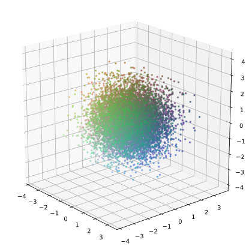

Psychosis & Schizophrenie
Lyra Health Seminar · June 2025
PD Dr. med. Veith Weilnhammer
Helen Wills Neuroscience Institute & Berkeley Artificial Intelligence Research Center
University of California Berkeley

Woran denken Sie, wenn Sie das Wort Psychose hören?

Die Geometrie psychischer Gesundheit
Frau X

Frau X


Es begann mit seltsamen Geräuschen durch die Wand, leise und kaum erkennbar, als würde jemand lauschen.
Mit der Zeit konnte ich die Stimme meines Nachbarn erkennen. Ich musste der Sache nachgehen.
Zuerst hörte ich seine Stimme nur in meiner Wohnung, aber später folgte er mir an andere Orte.
Dann wurde es mir klar – er ist ein Agent!
Dr. Y

Klinik

Klinik

Diagnose
Symptomvielfalt

Lost in translation


Found in translation

Mission von Lyra Health: Hochwertige psychische Versorgung für alle zugänglich machen.
Agenda
Ein Überblick über Psychose & Schizophrenie
Fallbeispiele aus der Praxis
Agenda
Ein Überblick über Psychose & Schizophrenie
Was sind psychotische Erfahrungen?
Epidemiologie & Verlauf
Ursachen & Risikofaktoren
Diagnostik & Warnzeichen
Kommunikationsstrategien
Evidenzbasierte Behandlung
Fallbeispiele aus der Praxis
Agenda
Ein Überblick über Psychose & Schizophrenie
Fallbeispiele aus der Praxis
Der misstrauische Nachbar: Paranoia und Intervention
Stimmen in der Leitung: Akute Psychose am Krisentelefon
Die falsche Familie: Wahnhafte Verkennung und Trauma
Der stille Rückzug: Subtiler Beginn bei einer hochfunktionalen Person
Worauf sind Sie am neugierigsten?
Ein Überblick über Psychose & Schizophrenie
Was sind psychotische Erfahrungen?

Es begann mit seltsamen Geräuschen durch die Wand, leise und kaum erkennbar, als würde jemand lauschen.
Mit der Zeit konnte ich die Stimme meines Nachbarn heraushören. Ich musste der Sache nachgehen.
Zunächst hörte ich seine Stimme nur in meiner Wohnung, aber später folgte er mir auch an andere Orte.
Dann wurde mir klar – er ist ein Agent!


Allgemeine Definition
Psychotische Erfahrungen spiegeln einen Zusammenbruch des Realitätsbezugs wider.
Dazu gehören Veränderungen in der Wahrnehmung (z. B. Stimmenhören), im Denkinhalt (z. B. Wahn), in der Sprache und im Verhalten.
Oft geht die die Fähigkeit verloren, innere Erlebnisse von äußeren Ereignissen zu unterscheiden.
Häufige Phänomene
Halluzinationen: Wahrnehmungen ohne äußere Reize (z. B. Stimmen, Bilder)
Wahn: Feste, falsche Überzeugungen (z. B. Verfolgungswahn, Größenwahn)
Desorganisation: Abschweifend, unzusammenhängend oder unlogisch
Gedankeneingebung: Der Glaube, dass Gedanken von außen ins eigene Bewusstsein eingegeben werden
Beeinflussungserlebnisse: Das Gefühl, von äußeren Kräften kontrolliert zu werden
Psychotische Störungen
Störungen aus dem Schizophrenie-Spektrum
Akute vorübergehende psychotische Störung
Schizoaffektive Störung
Bipolare Störung (mit psychotischen Merkmalen)
Schwere Depression (mit psychotischen Merkmalen)
Wahnhafte Störung
Substanz- oder medikamenteninduzierte psychotische Störung
DSM-5-Kriterien für Schizophrenie
Kriterium A – Zentrale Symptome:
- Zwei oder mehr der folgenden Symptome über ≥1 Monat. Mindestens eines muss (1), (2) oder (3) sein:
- (1-3) Wahnvorstellungen, Halluzinationen, desorganisierte Sprache
- (4-5) Desorganisiertes/katatones Verhalten, Negativsymptome
Kriterium B – Funktionelle Beeinträchtigung: Deutlicher Rückgang in Arbeit, Beziehungen oder Selbstfürsorge im Vergleich zu früherem Funktionsniveau
Kriterium C – Dauer: Störungen über ≥6 Monate, davon ≥1 Monat aktive Symptome
Kriterium D – Ausschluss affektiver Störungen: Schizoaffektive und affektive Störungen mit psychotischen Merkmalen müssen ausgeschlossen werden
Kriterium E – Ausschluss durch Substanzen/medizinische Ursachen
Kriterium F – Ausschluss bei Entwicklungsstörungen: Bei ASS oder Kommunikationsstörungen wird Schizophrenie nur diagnostiziert, wenn Wahn oder Halluzinationen im Vordergrund stehen und ≥1 Monat anhalten
Zusätze: Angaben zum Verlauf (z. B. erste Episode, Remission), Schweregrad und Katatonie
ICD-10 vs. ICD-11-Kriterien für Schizophrenie
Zentrale Symptome:
- Beide Systeme verlangen ≥1 Symptom ersten Ranges oder gleichwertige Symptome (z. B. Gedankeneingebung, wahnhafte Wahrnehmung)
Dauer: Psychotische Symptome müssen in beiden Systemen ≥1 Monat bestehen
Funktionalität:
- ICD-10: Funktionseinschränkung nicht erforderlich
- ICD-11: Weiterhin nicht erforderlich, kann aber Diagnose stützen
Subtypen:
- ICD-10 enthält Subtypen (z. B. paranoide, hebephrene, katatone Form)
- ICD-11 verzichtet vollständig auf Subtypen
Symptom-Spezifizierer: (nur ICD-11)
- Positivsymptome, Negativsymptome
- Depressiv, Manisch, Psychomotorisch, Kognitiv
Verlaufsspezifizierer:
- ICD-10: episodisch/kontinuierlich/Remission
- ICD-11: strukturierte Spezifizierungen (z. B. erste Episode in Remission, mehrere Episoden in akuter Phase)
Psychose (Syndrom)
- Definition: Ein Zustand, in dem eine Person den Kontakt zur Realität verliert.
- Kann auftreten bei:
- Schizophrenie, Bipolarer Störung, Depression etc.
- Substanzkonsum (z. B. Stimulanzien, Cannabis)
- Medizinischen Erkrankungen (Epilepsie, NMDAR-Enzephalitis etc.)
- Symptome:
- Halluzinationen
- Wahnvorstellunge
- Desorganisiertes Denken oder Verhalten
- Unruhe oder Verwirrtheit
- Dauer: Kann kurzzeitig oder langanhaltend sein
- Verlauf: Kann vollständig abklingen oder rezidivieren
Schizophrenie (Diagnose)
- Definition: Eine chronische psychische Erkrankung mit Störungen in Denken, Wahrnehmung und Affekt.
- Zentrale Merkmale:
- Wahn
- Halluzinationen
- Desorganisierte Sprache
- Negativsymptome (z. B. affektive Verflachung, sozialer Rückzug)
- Katatones Verhalten
- Diagnostische Kriterien (DSM-5):
- ≥2 zentrale Symptome, eines davon muss Wahn, Halluzinationen oder desorganisierte Sprache sein
- Mindestens 1 Monat präsent, gesamte Krankheitsdauer ≥6 Monate
- Deutliche soziale oder berufliche Beeinträchtigung
- Verlauf: Episodisch oder kontinuierlich; häufig lebenslange Unterstützung erforderlich
Zusammenfassung: Was ist Psychose?
Veränderter Realitätsbezug, über verschiedene diagnostische Gruppen hinweg
Zentrale Merkmale: Halluzinationen, Wahn, Desorganisation und Verlust der Einsicht
DSM-5, ICD-10 und ICD-11 stimmen in den Symptommustern überein, unterscheiden sich aber in der Struktur
Verlauf und Epidemiologie
Wie häufig sind psychotische Erfahrungen?
Wann beginnen sie?
Was passiert nach der Diagnose?
Frühphase: Es begann schleichend. Ich war 19. Zuerst konnte ich nicht schlafen. Dann hatte ich das Gefühl, die Leute im Bus redeten über mich.
Mit 21 brach ich das Studium ab. Ich dachte, meine Professor:innen würden meine Gedanken aufzeichnen.
Man brachte mich ins Krankenhaus, nachdem ich die ganze Nacht im Regen stand – überzeugt davon, dass der Himmel mir Botschaften senden wollte.
In Behandlung: Nach dem Krankenhaus wurde es ruhig. Zu ruhig. Meine Familie sagte, ich sei besser, aber ich fühlte nicht viel.
Ich begann mit Antipsychotika, zog zurück zu meiner Mutter, sprach kaum noch. Ich konnte mich nicht konzentrieren, war ständig müde. Ich habe mein Handy dreimal in einem Monat verloren!
Längerfristiger Verlauf: Es sind Jahre vergangen. Es gibt gute Tage. Ich engagiere mich gelegentlich ehrenamtlich. Aber die Welt wirkt noch immer fern, wie hinter Glas.
Demographie
Prävalenz: Etwa 1 von 200 Menschen weltweit (~0,5 %) ist von Schizophrenie betroffen.
Die Inzidenz ist in städtischen Gebieten, bei Migrant:innen und vulnerablen Gruppen etwas höher.
Männer erkranken früher (spätes Teenageralter bis frühe 20er), Frauen typischerweise später (späte 20er bis frühe 30er).
Demographie
Typischer Verlauf
Prodromalphase: Häufig sozialer Rückzug, reduzierte Motivation, subtile emotionale oder kognitive Veränderungen.
Erste Episode: Gekennzeichnet durch akute Psychose, meist mit Krankenhausaufenthalt.
Danach: Verlauf variiert: vollständige Remission, Rückfälle oder Chronifizierung – abhängig von Faktoren wie Unterstützung, früher Intervention und Therapietreue.
Typischer Verlauf

Heterogenität & Hoffnung
~ 20 % der Betroffenen erholen sich vollständig mit Behandlung und Unterstützung
~ 40 % erleben Rückfälle mit stabilen Phasen dazwischen
~ 40 % haben chronische Symptome, oft geprägt von Negativ- oder kognitiven Symptomen
Bessere Prognose bei: weiblichem Geschlecht, späterem Beginn, kurzer unbehandelter Psychose, guter prämorbider Funktion, sozialer Unterstützung
Frühintervention verbessert nachweislich den Verlauf
Zusammenfassung: Verlauf & Epidemiologie
Schizophrenie betrifft ~0,5 % der Bevölkerung – mehr als viele andere chronische neurologische Erkrankungen
Typischer Beginn im späten Jugendalter oder frühen Erwachsenenalter, früher bei Männern als bei Frauen
Verlauf ist variabel: vollständige Remission, Rückfälle oder chronische Symptome
Frühe Anzeichen: subtile kognitive und soziale Veränderungen (Prodrom), gefolgt von akuter Psychose
Prognose verbessert sich mit früher Behandlung, Unterstützung und Therapietreue
Ursachen & Risikofaktoren
Was trägt zur Psychose bei?
Frau X war schon immer ein sensibles Kind – ruhig, zurückgezogen, verträumt.
In der Pubertät hatte sie mit Ängsten und Entfremdungsgefühlen zu kämpfen.
Nach einer belastenden Trennung und vermehrtem Cannabiskonsum begannen die Stimmen.
Später erfuhr sie, dass ihr Onkel mit ähnlichen Symptomen im Krankenhaus war.
Verwundbarkeit & Auslöser
Genetische Veranlagung: Familiäre Vorbelastung erhöht das Risiko
Frühe Belastungen: Trauma, Vernachlässigung oder Missbrauch in der Kindheit
Substanzkonsum: Besonders Cannabis, Amphetamine, Psychedelika
Stress & Lebensereignisse: Trennungen, Migration, Leistungsdruck
Neuroentwicklungsfaktoren: Komplikationen bei Geburt oder Entwicklung
Vulnerabilität & Auslöser
Multiple Faktoren
Vulnerabilitäts-Stress-Modell: Psychose entsteht, wenn Anfälligkeit auf Stress trifft
Kognitives Modell: Fehlinterpretation innerer Erfahrungen
Neuroentwicklungsmodell: Frühe Hirnschädigungen begünstigen spätere Symptome
Biopsychosoziale Integration: Keine einzelne Ursache – mehrere Ebenen wirken zusammen
Multiple Faktoren

Zusammenfassung: Ursachen & Risiken
Genetische Risiken, frühe Traumata und Drogenkonsum können die Wahrscheinlichkeit einer Psychose erhöhen.
Stress und Fehlinterpretationen innerer Signale können als Auslöser wirken.
Moderne Theorien betonen die Interaktion biologischer, psychologischer und kontextueller Faktoren.
Assessment
Wie erkennt man eine beginnende Psychose?
Welche Zeichen sollten besorgniserregend sein?
Wie sieht eine gute Diagnostik aus?
Frau X war gerade erst nach mehreren Monaten Abwesenheit in den Beruf zurückgekehrt. Zunächst war sie in Besprechungen still. Dann begann sie, diese ganz zu meiden.
Als ein Kollege anrief, flüsterte sie, dass die Bürotelefone abgehört würden. Sie sagte: "Sie wissen alles, was ich denke."
Sie stimmte einer Untersuchung erst zu, nachdem ihr Partner bemerkte, dass sie seit zwei Tagen nichts gegessen hatte und sich nicht mehr aus dem Haus traute.
Hinweise
Ungewöhnliches Misstrauen, veränderte Wahrnehmungen oder feste, merkwürdige Überzeugungen
Plötzlicher sozialer Rückzug, Funktionsverlust oder verflachter Affekt
Zerfahrene Sprache, Gedankensprünge oder unlogische Gedanken
Berichte über "Gedankenlesen", "Überwachung" oder "Stimmenhören"
Besorgnis im Umfeld ohne klare Erklärung
Best Practices
Beginne mit einem kooperativen, vorurteilsfreien Gespräch
Stelle direkte, aber behutsame Fragen zu ungewöhnlichen Wahrnehmungen und Überzeugungen
Bewerte Einsicht, Realitätsprüfung, Affekt und Gedankengang
Nutze strukturierte Instrumente (z. B. BPRS, PANSS, CAPS, PDI, SAPS, SANS etc.) bei Risikofällen
Frage stets nach Suizidalität, Substanzkonsum und aktuellen Belastungen
Präzisionspsychiatrie
Verwendet digitale Vorab-Screenings zur Erkennung früher Warnzeichen
Integriert KI-gestützte Triage und strukturierte Erstgespräche
Fokus auf schnellen Zugang zur Versorgung, inkl. passender Therapeut*innen
Folgeuntersuchung von Warnzeichen durch spezialisierte Diagnostik (online oder vor Ort)
Behandlungspfade beinhalten ggf. CBTp, medikamentöse Beratung und Familienunterstützung
Zusammenfassung: Diagnostik & Warnzeichen
Frühe Zeichen oft subtil — Rückzug, merkwürdige Überzeugungen, veränderte Wahrnehmungen
Gute Diagnostik basiert auf Empathie, Struktur und Risikofaktoren
Digitale Tools können menschliche Beurteilung unterstützen und Zugänge verbessern
Was sind Ihre Herausforderungen bei der Arbeit mit Menschen, die psychotische Erfahrungen machen? Was hat geholfen?
Kommunikationsstrategien
Frau X beschrieb einen Moment, in dem sich ihr Spiegelbild nicht mehr wie ihr eigenes anfühlte.
Sie hatte Angst, dass etwas ihren Körper übernommen hatte, sogar ihre Stimme klang ihr fremd.
Die ruhige Reaktion der Therapeutin ließ die Angst nicht verschwinden — aber sie verhinderte eine Eskalation.
In diesem Moment half nicht Beruhigung, sondern einfach gesehen zu werden – ohne Alarm.
Grundprinzipien
Zentrale Strategien
Sicherheit schaffen: Ruhiger Tonfall, offene Körperhaltung.
Erlebnis validieren: Wenn man den Inhalt nicht teilen, kann man immer die emotionale Wirkung anerkennen.
Neugierig bleiben: Offene Fragen stellen, um Kontext und Bedeutung zu verstehen.
Konfrontation vermeiden: Direktes Infragestellen kann zu Abwehr oder Angst führen.
Autonomie respektieren: Zusammenarbeit und Entscheidungsfreiheit betonen.
Digitale Formate
Digitale Strategien
Beziehungsaufbau: Tonfall und Empathie sind entscheidend – Name verwenden, Sprache spiegeln.
Stabilität früh erfassen: Realitätskontakt? Wahrnehmungsverzerrung? Paranoide Gedanken?
Klare Sprache: Metaphern und Abstraktes vermeiden
Struktur geben: Vorhersehbare Abläufe, Zusammenfassungen, Check-ins helfen gegen Angst.
Zusammenfassung: Kommunikation bei Psychose
Wirksam kommunizieren heißt: ruhig, validierend, gewaltfrei
Erlebnisse mit Neugier und behutsam erkunden – ohne Realität zu bestätigen oder zu verneinen.
Im digitalen Kontakt besonders auf Ton, Struktur und Sicherheit achten.
Behandlungsansätze
Evidenzbasiert, personenorientiert und nachhaltig
Frau X wurde von ihrer Schwester in die Notaufnahme gebracht, nachdem sie sich wochenlang zunehmend zurückgezogen und desorganisiert verhalten hatte.
Sie war überzeugt, dass ihre Nachbarn ihr verschlüsselte Botschaften senden würden, und hatte seit Tagen nicht geschlafen.
Sie erhielt ein Antipsychotikum – aber die Behandlung endete nicht dort.
Ein koordiniertes Team half ihr, Routinen wiederherzustellen, Traumata zu verarbeiten und schrittweise wieder soziale Kontakte aufzunehmen.
Multimodale Versorgung
Zentrale Behandlungsbereiche
Medikamente: Antipsychotika lindern akute Symptome. Sorgfältige Dosierung und gemeinsame Entscheidungen fördern die Therapietreue.
Psychoedukation: Wissen stärkt Patienten und Angehörige, verbessert die Zusammenarbeit und reduziert Stigmatisierung.
KVTp: Hilft, belastende Überzeugungen zu verarbeiten, ohne sie zu entwerten. Wirksam zur Rückfallprophylaxe.
Familienarbeit: Senkt das Maß an ausgedrückter Emotion, stärkt Bewältigungsstrategien und soziale Unterstützung.
Unterstützte Arbeit & Wohnen: Stellt Identität und Sinn wieder her – grundlegend für langfristige Genesung.
Recovery-Ansatz
Recovery bedeutet mehr als Symptomkontrolle
Hoffnung und Empowerment: Der Glaube an Erholung und persönliches Wachstum steht im Zentrum der Behandlungskultur.
Gemeinsame Entscheidungsfindung: Patient:innen bestimmen Ziele, Präferenzen und akzeptable Risiken.
Integrierte Versorgung: Komorbiditäten, Substanzkonsum und soziale Bedarfe ganzheitlich adressieren.
Digitale Tools: Durchdacht eingesetzt, können Apps und Messenger-Kanäle Kontinuität, Symptom-Tracking und Erinnerungshilfen unterstützen.
Nach der Entlassung fiel es Frau X schwer, ihre Termine, Medikamente und Tagesstruktur zu organisieren.
Ihr Hausarzt wusste nicht, wie er sie unterstützen konnte – der Entlassbrief lag ihm nicht vor.
Ein:e Fallmanager:in stellte die Verbindung wieder her – koordinierte die Versorgung, blieb im regelmäßigen Kontakt und bezog den Hausarzt in die Planung ein.
Diese Kontinuität verhinderte einen Rückfall und unterstützte ihre Wiedereingliederung in den Alltag.
Übergänge
Vom Krisenmodus zurück in die Gemeinschaft
Frühzeitige Planung: Entlassungsplanung ab Tag eins – gemeinsam mit Patient:in, Angehörigen und ambulanten Teams.
Lücken überbrücken: Nachsorgetermine und niedrigschwellige Kontaktmöglichkeiten bereitstellen – auch Hausbesuche oder digitale Anbindungen.
Klare Kommunikation: Hausärzt:innen und Sozialarbeiter:innen brauchen zeitnahe, verständliche Entlassungsberichte.
Rückfallprophylaxe: Individuelle Krisenpläne entwickeln und das gesamte Unterstützungsnetzwerk einbeziehen.
Integrierte Netzwerke
Nachhaltige, multiprofessionelle Versorgung
Psychiatrische Betreuung: Weitere Verlaufskontrolle, Medikamentenanpassungen und therapeutische Begleitung.
Hausärztliche Versorgung: Komorbiditäten behandeln, Stoffwechsel überwachen, zugänglicher Ankerpunkt.
Fallmanagement: Koordination sicherstellen, sich für Wohnraum, Leistungen und Tagesstruktur einsetzen.
Peer-Support: Erfahrungsexpertise schafft Hoffnung und authentische Verbindung als Ergänzung zur klinischen Versorgung.
Zusammenfassung: Behandlung und nachhaltige Genesung
Evidenzbasierte Behandlung umfasst Medikamente, Psychotherapie, Familienarbeit und psychosoziale Unterstützung.
Recovery wird durch Kontinuität, Zusammenarbeit und individuelle Zielplanung gestützt.
Integration über Versorgungsbereiche hinweg – Psychiatrie, Hausärzte, digitale Tools – ist entscheidend für langfristige Ergebnisse.
Fallbeispiele und Reflexionen aus der Praxis
Der misstrauische Nachbar: Aufkommende Paranoia und frühe Intervention
Stimmen in der Leitung: Akute Psychose während eines Notrufs
Die falsche Familie: Wahnhafte Verkennungen und Trauma
Der stille Rückzug: Subtiler Beginn bei einer hochfunktionalen Person
 Der misstrauische Nachbar
Der misstrauische Nachbar
A., 21, war kürzlich in ein Studentenwohnheim gezogen. Nachts hörte er angeblich Stimmen durch die Wände flüstern.
Er war überzeugt, dass der Nachbar Abhörgeräte installiert habe und ihn provozieren wolle.
Obwohl er weiterhin zur Universität ging, wurde er zunehmend misstrauisch und stark beschäftigt. Eine frühe Intervention half, eine Verschlechterung zu verhindern.
 Stimmen in der Leitung
Stimmen in der Leitung
L., 34, rief eine Krisenhotline an und berichtete, dass Regierungsbeamte ihre Gedanken über das Radio ausstrahlten.
Sie war verängstigt und desorientiert, unfähig, ihre inneren Gedanken von äußeren Stimmen zu unterscheiden.
Es war ihre erste psychotische Episode, ausgelöst durch Jobverlust, Isolation und Schlafmangel.
 Die falsche Familie
Die falsche Familie
T., 28, war überzeugt, dass seine Eltern durch identisch aussehende Doppelgänger ersetzt worden seien.
Er beschrieb eine emotionale Entfremdung und ein starkes Gefühl der Unwirklichkeit zu Hause.
In der Therapie wurde später eine tieferliegende Traumageschichte deutlich — die wahnhafte Verkennung diente als Ausdruck ungelöster emotionaler Verletzungen.
F., 25, eine sehr erfolgreiche Studentin, begann, Abgabetermine zu versäumen und sich sozial zurückzuziehen.
Sie reagierte nicht mehr auf Anrufe und saß oft stundenlang schweigend da, in Gedanken versunken.
Erst Monate später offenbarte sie, dass sie Stimmen hörte, die ihre Handlungen kritisierten und sie an ihren eigenen Gedanken zweifeln ließen.
Vielen Dank für Ihre Aufmerksamkeit